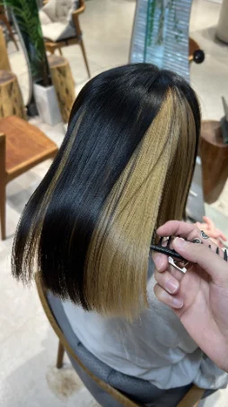
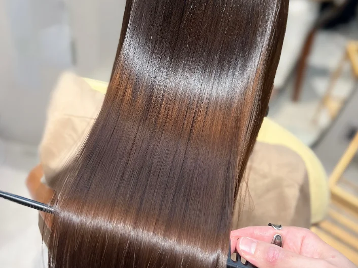
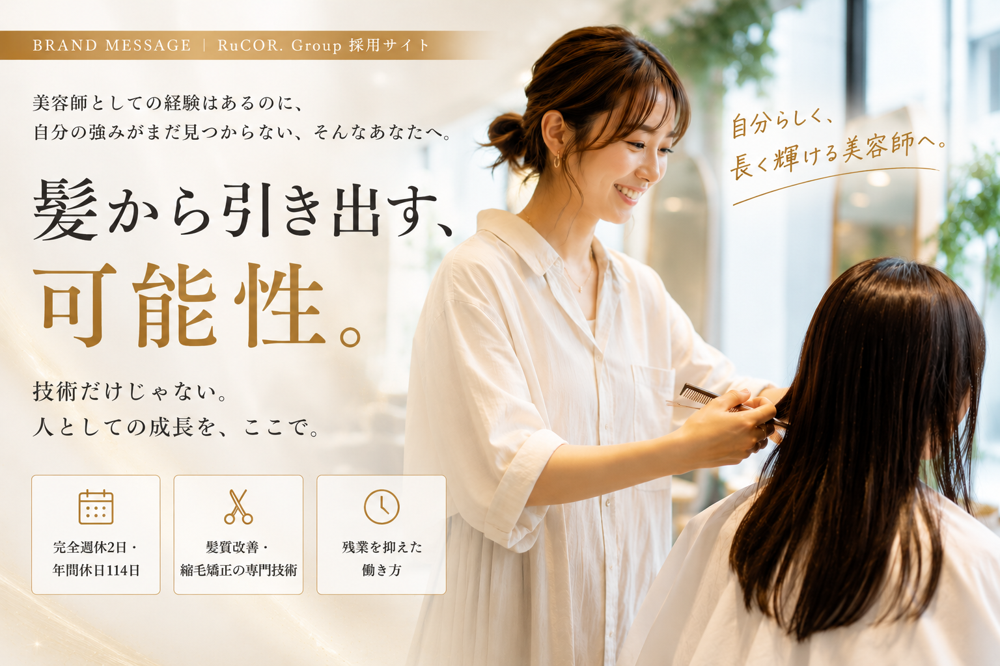

TECHNIQUE


技術へのこだわり


髪質改善 ── RuCOR.の専門性の軸となる技術。
縮毛矯正 ── 難易度の高い技術も、理論から学べます。

―毎日時間に追われている
―単価が低く、疲れるだけの毎日
―休みの日までSNS投稿に追われる
―教育がなく、成長できている実感がない
―指名は増えてきたけど、理由を聞かれると答えに詰まる
―このまま経験年数だけ重ねていくのが、正直少し怖い
声にすると、こんな感じかもしれません。
そんな迷いを抱えているあなたと、RuCOR.は一緒に働きたいと思っています。
| 他サロン | RuCOR. | |
|---|---|---|
| お客様との向き合い方 | 回転重視 | 一人のお客様としっかり向き合う |
| 単価 | 低単価で疲れるだけ | 高単価だから焦らず向き合える |
| 予約 | 掛け持ち多数 | 予約をコントロールできる |
| 強みの作り方 | 技術だけで判断される | 技術＋人間力の両方が強みになる |
マンツーマン×髪質改善サロンだからできる働き方
RuCOR.が引き出す「可能性」には、2つの意味があります。
お客様は、本当に欲しいものを言葉にできていないことが多い。「似合うか不安です」と言いながら、本当は「似合う色や髪型を教えてほしい」という気持ちを抱えている。RuCOR.は、その言葉の裏にある本当の想いに気づき、叶えていきます。
「美容師だから仕方ない」——そう思い込んでいること、ありませんか。旅行に行く時間も、家族と過ごす時間も、諦める必要はありません。そんな当たり前の日々を実現できることも、RuCOR.が引き出したい可能性のひとつです。
強みは、これだけではありません。ここでは一例をご紹介します。
例 ／ 技術の強み
他のサロンでは簡単に真似できない、髪質改善の技術を専門性として身につけられます。
例 ／ 人間力の強み
お客様との長いお付き合いの中で築く信頼関係も、あなただけの強みになります。
あなたの強みは何ですか。RuCOR.には、その強みを見つけ、育てていく環境があります。
自分の強み、RuCOR.で見つけてみませんか。
まずは話を聞いてみる完全週休2日
火曜定休・シフト制
WORK STYLE
年間休日114日
夏期・冬季休暇あり
WORK STYLE
残業ほぼなし
19時退社の徹底
WORK STYLE
社会保険完備
将来も安心して働ける
BENEFIT
高単価サロン
12,000〜16,000円
SALON
平均指名率80%超
信頼される技術と接客
SALON
お客様の10年先も、綺麗への実現。
お客様の未来の美しさを支えへ。
縁ある人の人生の質を上向かせる会社。
その理念を実現するために、RuCOR.は「技術」と「人」の両輪を大切にしています。
入口は技術
諦めていた髪を変えられる技術と提案で、お客様に「まず来てもらう」入口をつくります。
中身は人
カウンセリングで本音を引き出し、感じ取る。だから「またこの人に相談したい」が生まれます。
技術で出会い、人として信頼される。この2つが重なって、お客様の10年先の美しさに寄り添い続けられるサロンになります。
01
技術と人間力を高め、昨日の自分を超え続ける。
02
要望に応えるだけでなく、信頼される提案を追い求める。
03
失敗を否定せず、打席に立ったことを評価する。
04
1人が強いチームじゃなく、全員で強いチームを目指す。
05
人や環境のせいにせず、自分にできることを考える。
06
仲間やお客様を否定せず、可能性として捉える。


髪質改善 ── RuCOR.の専門性の軸となる技術。
縮毛矯正 ── 難易度の高い技術も、理論から学べます。
店長
入社前
大手サロンで経験を積んでいたが、自分の強みが分からずにいた。
悩み
指名理由を聞かれても、うまく答えられないことに焦りを感じていた。
入社後
髪質改善の技術とカウンセリングを一から学び直した。
今
自分の言葉で強みを語れるようになり、指名理由も明確になった。
指名率30%台 → 90%
スタイリスト
入社前
前職でも売上や給与はそこそこあったが、仕事に追われて自分の時間がなかった。
悩み
忙しさが評価されている実感に繋がらず、このままでいいのか迷っていた。
入社後
RuCOR.の完全週休2日・残業の少ない働き方で、自分の時間を取り戻せた。
今
休みの日は旅行や技術セミナーに出かけ、成長もプライベートも楽しめている。
プライベートの充実度 UP
経験はあるけれど、自分だけの強みにまだ気づけていない方を、特に歓迎します。
HAIR SALON
技術とヘッドスパ・リラクゼーションを軸にした美容室。
HAIR SALON
髪質改善を軸にした美容室。
HEAD SPA
ヘッドスパ専門店。
| 職種 | スタイリスト |
|---|---|
| 仕事内容 | 髪質改善・縮毛矯正・カラー中心のサロンワーク |
| 応募資格 | 美容師免許保持者 |
| 雇用形態 | 正社員（試用期間3ヶ月、条件変動なし） |
| 給与 | 基本給25万円〜27万円（超過分は歩合40%で計算）＋店販歩合10% |
| 固定残業代 | 14時間分を含む |
| 給与実績 | 入社半年／29歳スタイリスト 月給33万円 |
| その他手当 | 管理手当1万円／外部講師ヘルプ2万円 |
| 勤務時間 | 9:40〜19:10 |
| 休日・休暇 | 完全週休2日制（火曜＋希望休1日） |
| 長期休暇 | 夏季5日・年末年始5日 |
| 福利厚生・待遇 | 社会保険完備／健康診断／産休育休／研修制度／社員割引 |
| 勤務地 | 〒214-0014 神奈川県川崎市多摩区登戸2662-2 ヨシザワ第8ビル5F-B（umily by RuCOR.） |
Q. 新規のお客様も担当できますか？
A. はい。入社後の研修終了後から担当できます。
Q. SNS発信が苦手でも大丈夫ですか？
A. 発信が得意でなくても問題ありません。RuCOR.ではSNSは強制していません。
Q. 経験が浅くても応募できますか？
A. 美容師免許をお持ちであれば経験年数は問いません。研修でしっかりキャッチアップできます。
Q. 完全週休2日制の休みはしっかり取れますか？
A. はい。火曜定休に加え希望休1日を組み合わせた完全週休2日制で、プライベートの時間もしっかり確保できます。
Q. 見学だけでもいいですか？
A. はい、まずはサロンの雰囲気を見に来ていただくだけでも歓迎です。